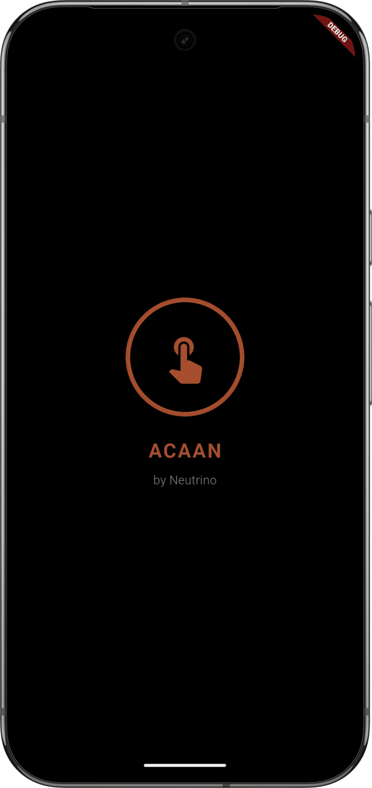

ACAAN - Mobile Application
Any Card At Any Number — a card-magic effect brought to your phone.
Dart
Flutter
Any Card At Any Number — a card-magic effect brought to your phone.
ACAAN is a performance tool for close-up card magic, built around the classic "Any Card At Any Number" plot. The phone stands in for a real deck: the performer secretly sets a target card, hands the device to a spectator, and whatever they do with the cards, the first one they turn over is the target.
The secret is in the deck graphic itself. The closed deck hides an invisible 2×2 grid — one quadrant per suit — and the open deck an invisible 3×5 grid running from Ace to King. Two taps that read as nothing more than handling the deck arm the effect, with no menus, no typing and no tells.
Once the deck is spread, all 52 cards become individually draggable and flippable objects. The spectator can shuffle them around the screen, stack them and browse as long as they like; the force is applied at the first flip.

Choose the suit with one tap on the closed deck, choose the value with a second tap on the open deck, and hand the phone over. The cards spread into a loose pile, each with a small random offset and tilt, and every touched card lifts, scales and comes to the front.
The first flip turns the target card with a 3D rotation. One button gathers the cards back and reshuffles a fresh deck for the next spectator.
ACAAN is a Flutter and Dart app with a single codebase for Android and iOS, running entirely offline from bundled assets. Selection grids are computed from the geometry of the deck images, themes are described in a JSON manifest, and settings are persisted on the device. A small native Android component adapts the full-screen mode to the device's navigation style.
Drives the deck state machine (inDeck → deckOpening → open → scrollingOut → gathering), the hit-testing that turns a touch Offset into a suit or rank, the face-swap that applies the force, and the list reordering used as a z-index for card stacking.
Renders the splash screen, deck and 52 card widgets.
Card themes are described in a small bundled manifest, so adding a deck means adding images and one entry.
Persists the performer's setup — the selected card theme and the deck exit mode — so the app reopens configured exactly as it was left.
A navigation_mode_channel MethodChannel reports whether the Android device uses gesture or three-button navigation, so the app picks the immersive system-UI mode that keeps the deck full-screen without the system bars intruding.